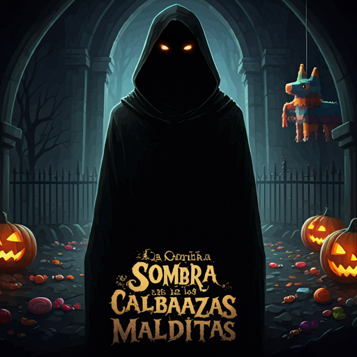

La Sombra de las Calabazas Malditas

En el oscuro pueblo de Nocturnia, una antigua maldición ha resurgido. Las calabazas, antes símbolo de protección en Halloween, ahora emanan una presencia siniestra. Los habitantes viven con miedo, y las calles están envueltas en sombras y misterio.
Eres Raven, una investigadora de lo oculto. Has llegado a Nocturnia tras recibir una misteriosa carta que te implora romper la maldición que consume al pueblo. Descubres que las fuentes de alegría, los preciados caramelos, han desaparecido, reemplazados por enigmas y peligros ocultos bajo calabazas malditas.
Tu misión es desentrañar los secretos del mapa encantado, seguir las pistas y evitar las trampas que el mal ha dejado a su paso. Solo así podrás liberar a Nocturnia de la oscuridad y devolver la esperanza a sus habitantes antes de que la noche eterna se apodere del mundo.
Instrucciones Técnicas del Juego
Elementos del Mapa
- 🎃 Calabaza Maldita: Celda que puede ocultar una fuente de caramelos.
- 🍬 Caramelo Embrujado: Indica que en las celdas adyacentes (arriba, abajo, izquierda o derecha) hay una fuente de caramelos oculta.
- 🪅 Reliquia Profana: Indica que en las celdas adyacentes, incluyendo las diagonales, hay una fuente de caramelos oculta.
- 💥 Sello Maligno: Anula las celdas adyacentes, impidiendo que puedan contener fuentes de caramelos.
Reglas del Juego
- Anulación por Sello Maligno (💥): Las celdas adyacentes a un 💥 no pueden contener fuentes de caramelos y quedan anuladas.
- Detección por Caramelo Embrujado (🍬): Las celdas adyacentes a un 🍬 deben contener una fuente de caramelos si son calabazas y no están anuladas.
- Detección por Reliquia Profana (🪅): Las celdas adyacentes, incluyendo las diagonales, a una 🪅 deben contener una fuente de caramelos si son calabazas y no están anuladas.
- Calabazas Malditas (🎃): Pueden ocultar una fuente de caramelos o estar vacías. Usa las pistas de 🍬 y 🪅 para identificarlas.
- Resolución del Mapa: Marca las calabazas que contienen fuentes con 🌈 y las anuladas por un 💥 con 💀. Las calabazas vacías permanecen como 🎃.
Objetivo
Determinar la ubicación de todas las fuentes de caramelos ocultas bajo las calabazas malditas, siguiendo las pistas y evitando las celdas anuladas. El objetivo es identificar correctamente todas las fuentes para romper la maldición que afecta a Nocturnia.
Ejemplo de Mapa y Solución
Mapa Inicial
🎃 🍬 🎃 💥
🍬 🎃 🎃 🎃
🎃 🎃 🪅 🎃
🎃 🎃 🎃 🎃
Mapa Resuelto
🌈 🍬 💀 💥
🍬 🌈 🌈 💀
🌈 🌈 🪅 🌈
🎃 🌈 🌈 🌈
Leyenda
🌈: Calabaza con fuente de caramelos
💀: Calabaza anulada por sello maligno
🎃: Calabaza sin fuente de caramelos